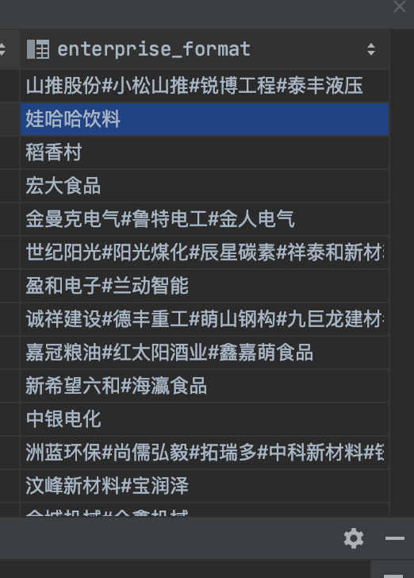
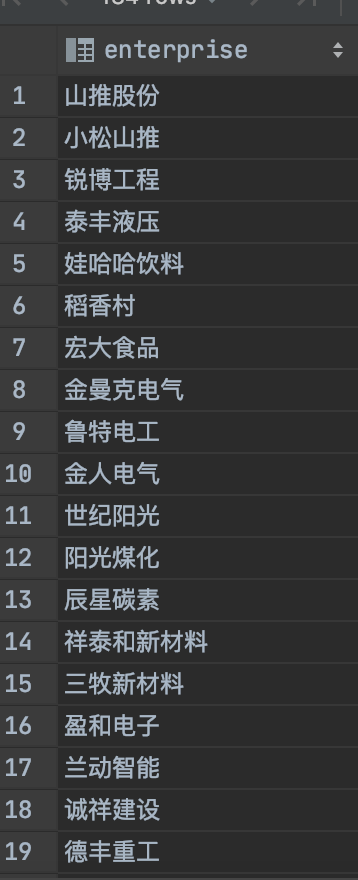

生成网格数据正方形
WITH bbox AS (
SELECT
ST_Transform(ST_SetSRID(ST_Extent(geom), 4326), 3857) as ext
FROM your_table
), grid AS (
SELECT
ST_Transform(
ST_MakeEnvelope(
ST_XMin(ext) + delta_x * idx,
ST_YMin(ext) + delta_y * idy,
LEAST(ST_XMin(ext) + delta_x * (idx + 1), ST_XMax(ext)),
LEAST(ST_YMin(ext) + delta_y * (idy + 1), ST_YMax(ext)),
3857
),
4326
) AS geom
FROM bbox,
generate_series(0, CEIL((ST_XMax(ext)-ST_XMin(ext))/delta_x)::int-1) AS idx,
generate_series(0, CEIL((ST_YMax(ext)-ST_YMin(ext))/delta_y)::int-1) AS idy
)
SELECT * FROM grid;
新增基础字段
alter table public.d_growth_monitoring
add create_by int8;
comment on column public.d_growth_monitoring.create_by is '创建人';
alter table public.d_growth_monitoring
add create_date timestamp;
comment on column public.d_growth_monitoring.create_date is '创建时间';
alter table public.d_growth_monitoring
add update_by int8;
comment on column public.d_growth_monitoring.update_by is '修改人';
alter table public.d_growth_monitoring
add update_date timestamp;
comment on column public.d_growth_monitoring.update_date is '修改时间';
alter table public.d_growth_monitoring
add del_flag varchar;
comment on column public.d_growth_monitoring.del_flag is '删除标记（0，正常，1，删除）';
计算中心点、重心点（质心）
中心：ST_Centroid
重心：ST_PointOnSurface
ST_PointOnSurface的结果保证位于面内,而由计算的点ST_Centroid可能在外面
保留小数
round(numeric, integer)
update d_plot set area = ROUND((st_area(geom::geography)*0.0015)::numeric,2) where 1=1
计算面积
平方米
select st_area(st_setsrid(st_geomfromgeojson('"+geoJson+"'),4326)::geography)
亩
select st_area(st_setsrid(st_geomfromgeojson('"+geoJson+"'),4326)::geography)*0.0015
时区
grep postgresql.conf
如果是空修改默认值
COALESCE(error_login_num,0)+1
开启审计日志
logging_collector = on
log_destination = 'csvlog'
log_truncate_on_rotation = on
log_connections = on
log_disconnections = on
log_error_verbosity = verbose
log_statement = ddl
log_filename = 'postgresql-%Y-%m-%d_%H%M%S.log'
log_rotation_age = 1d
log_rotation_size = 50MB
查询字段和备注
SELECT
col_description (a.attrelid, a.attnum) as comment,
format_type (a.atttypid, a.atttypmod) as type,
a.attname as name,
a.attnotnull as notnull
FROM
pg_class as c,
pg_attribute as a
where
c.relname = 't_satellite_monitor_hotspots'
and a.attrelid = c.oid
and a.attnum > 0
order by
a.attname
第二种详细+排序查询方式
SELECT a.attnum, a.attname AS field, t.typname AS type, a.attlen AS length, a.atttypmod AS lengthvar
, a.attnotnull AS notnull, b.description AS comment
FROM pg_class c, pg_attribute a
LEFT JOIN pg_description b
ON a.attrelid = b.objoid
AND a.attnum = b.objsubid, pg_type t
WHERE c.relname = 'd_plot'
AND a.attnum > 0
AND a.attrelid = c.oid
AND a.atttypid = t.oid
ORDER BY a.attnum;
修改编码
localedef -i zh_CN -c -f UTF-8 -A /usr/share/locale/locale.alias zh_CN.UTF-8
vi /etc/locale.conf
LANG=zh_CN.UTF8
修改性能参数
--参数
show all;
show maintenance_work_mem;
ALTER SYSTEM SET maintenance_work_mem= 1048576;
--重启数据库
show maintenance_work_mem;
--取消GaussDB/PostgreSQL.auto.conf的参数设置
ALTER SYSTEM SET maintenance_work_mem= default;
执行SQL文件
默认
psql -U 数据库用户（postgres） -d 数据库名 -f init.sql
-a
–echo-all
在读取所有非空输入行时将其打印到打印到标准输出（不适用于交互方式读取的行）。相当于将变量ECHO设置为all
psql -U 数据库用户（postgres） -d 数据库名 -a -f init.sql
-A
–no-align
切换到未对齐的输出模式（默认输出模式以其它方式对齐）。
psql -U 数据库用户（postgres） -d 数据库名 -A -f init.sql
-b
–echo-errors
将失败的SQL命令打印到标准错误输出。相当于将变量ECHO设置为错误。
psql -U 数据库用户（postgres） -d 数据库名 -b -f init.sql
psql -U postgres -d cs_lsdb -b -f init.sql
备份恢复
备份
pg_dump -h localhost -U postgres drone > drone.bak
恢复
psql -h localhost -U postgres -d drone < drone.bak
恢复
psql -h localhost -U username -d database < d:/data.bak
psql -h localhost -U postgres -d drone < drone.bak
psql -h localhost -U postgres -d city_plan2 < city_plan.bak
psql -h localhost -U postgres -d cs_gis < cs_gis.bak
psql -h localhost -U postgres -d linkeda_postgres_zhuzhouhehu_1 < linkeda_postgres_zhuzhouhehu_1.bak
psql -h localhost -U postgres -d drone_nd_test < drone_nd_test.bak
psql -h localhost -U postgres -d drone_nd < drone_nd.bak
psql -h localhost -U postgres -d drone_nd_dev < drone_nd.bak
psql -h localhost -U postgres -d finance < finance.bak
psql -h localhost -U postgres -d linkeda_fire_prevention < linkeda_fire_prevention.bak
psql -h localhost -U postgres -d test2 < jz.bak
psql -h localhost -U postgres -d jz < jz.bak
psql -h localhost -U postgres -d cs_xhdb < cs_xhdb.bak
psql -h localhost -U postgres -d zhyw <
备份
pg_dump -h localhost -U postgres linkeda_fire_prevention > linkeda_fire_prevention.bak
pg_dump -h localhost -U postgres wwh > C:\Project\wwh.bak
pg_dump -h localhost -U postgres drone > drone.bak
pg_dump -h localhost -U postgres jz > jz230211.bak
pg_dump -h localhost -U postgres cs_xhdb > cs_xhdb.bak
pg_dump -h localhost -U postgres cs_gis > cs_gis.bak
pg_dump -h localhost -U postgres cs_lcdb > cs_lcdb.bak
pg_dump -h localhost -U postgres cs_map_server_db > cs_map_server_db.bak
pg_dump -h localhost -U postgres cs_map_server_db_test > cs_map_server_db_test.bak
pg_dump -h localhost -U postgres cs_xhdb > cs_xhdb.bak
pg_dump -h localhost -U postgres csdb > csdb.bak
pg_dump -h localhost -U postgres csdb_lzz > csdb_lzz.bak
pg_dump -h localhost -U postgres drone > drone.bak
pg_dump -h localhost -U postgres drone_nd > drone_nd.bak
pg_dump -h localhost -U postgres drone_nd_test > drone_nd_test.bak
pg_dump -h localhost -U postgres finance > finance.bak
pg_dump -h localhost -U postgres linkeda_postgres_zhuzhouhehu_1 > linkeda_postgres_zhuzhouhehu_1.bak
pg_dump -h localhost -U postgres gis_yjfh > gis_yjfh.bak
psql -h localhost -U postgres -d gis_yjfh < gis_yjfh.bak
pg_dump -h localhost -U postgres cropwatch > F:\YSS\db\cropwatch.bak
pg_dump -h localhost -U postgres cropwatch_dev > F:\YSS\db\cropwatch_dev.bak
pg_dump -h localhost -U postgres CropWatch2 > F:\YSS\db\CropWatch2.bak
pg_dump -h localhost -U postgres cropwatch2_geofound > F:\YSS\db\cropwatch2_geofound.bak
pg_dump -h localhost -U postgres cropWatch2_test > F:\YSS\db\cropWatch2_test.bak
pg_dump -h localhost -U postgres kddb > E:\kddb.bak
psql -h localhost -U postgres -d kddb < D:\gs\kddb.bak
psql -h localhost -U postgres -d cropwatch < D:\YSS\db\pg\cropwatch.bak
psql -h localhost -U postgres -d cropwatch_dev < D:\YSS\db\pg\cropwatch_dev.bak
psql -h localhost -U postgres -d CropWatch2 < D:\YSS\db\pg\CropWatch2.bak
psql -h localhost -U postgres -d cropwatch2_geofound < D:\YSS\db\pg\cropwatch2_geofound.bak
psql -h localhost -U postgres -d cropWatch2_test < D:\YSS\db\pg\cropWatch2_test.bak
pg_dump -h localhost -U postgres -d project -t et_api > D:\et_api.sql
pg_dump -h localhost -U postgres -d soaking -t base_lindi_copy1 > D:\base_lindi_copy1.sql
pg_dump -h localhost -U postgres -d soaking -t base_hnxzqh > D:\base_hnxzqh.sql
pg_dump -h localhost -U postgres -d soaking -t b_huoqing_two_fire_lhzgxtxzdc > D:\b_huoqing_two_fire_lhzgxtxzdc.sql
pg_dump -h localhost -U postgres -d soaking -t b_huoqing_two_fire_ghswfhldxx > D:\b_huoqing_two_fire_ghswfhldxx.sql
psql -h localhost -U postgres -d linkeda_fire_prevention < b_huoqing_two_fire_lhzgxtxzdc.sql
psql -h localhost -U postgres -d linkeda_fire_prevention < b_huoqing_two_fire_ghswfhldxx.sql
psql -h localhost -U postgres -d cs_gis < b_huoqing_two_fire_lhzgxtxzdc.sql
psql -h localhost -U postgres -d cs_gis < b_huoqing_two_fire_ghswfhldxx.sql
psql -h localhost -U postgres -d jydb < D:\et_api.sql
psql -h localhost -U postgres -W -v ON_ERROR_STOP=1 -d cs_gis < base_lindi_copy1.sql
psql -h localhost -U postgres -d linkeda_fire_prevention < base_lindi_copy1.sql
psql -h localhost -U postgres -d cropwatch2_geofound < cropwatch2_geofound.bak
psql -h localhost -U postgres -d cs_gis < base_hnxzqh.sql
psql -h localhost -U postgres -d linkeda_fire_prevention < base_hnxzqh.sql
备份脚本
@ECHO OFF
@setlocal enableextensions
@cd /d "%~dp0"
SET PGPATH="F:\Program Files\PostgreSQL\9.6\bin\"
SET SVPATH=D:\WRJ\db\
set PGHOST=192.168.1.132
set PGPORT=54321
set PGUSER=postgres
set PGPASSWORD=123.com
set PGDATABASE=sny
SET DBDUMP=%PGDATABASE%_%date:~0,4%-%date:~5,2%-%date:~8,2%.bak
@ECHO OFF
%PGPATH%pg_dump > %SVPATH%%DBDUMP%
echo Backup Complete %SVPATH%%DBDUMP%
#pause
恢复脚本
@ECHO OFF
@setlocal enableextensions
@cd /d "%~dp0"
SET PGPATH="F:\Program Files\PostgreSQL\9.6\bin\"
SET SVPATH=D:\WRJ\db\
set PGHOST=192.168.1.132
set PGPORT=54321
set PGUSER=postgres
set PGPASSWORD=123.com
set PGDATABASE=sny_t
SET DBDUMP=%PGDATABASE%_%date:~0,4%-%date:~5,2%-%date:~8,2%.bak
@ECHO OFF
%PGPATH%psql < %SVPATH%%DBDUMP%
echo Import Complete %SVPATH%%DBDUMP%
#pause
创建用户的权限
CREATE USER jydb_user_read WITH PASSWORD 'pgjn@#*.*123.com';
--赋予登录权限
grant connect on database jydb to jydb_user_read;
--赋予select权限
GRANT SELECT ON ALL TABLES IN SCHEMA public to jydb_user_read;
CREATE USER fhdb_user_read WITH PASSWORD 'fhpg@#*.*123.com';
--赋予登录权限
grant connect on database linkeda_fire_prevention to fhdb_user_read;
--赋予select权限
GRANT SELECT ON ALL TABLES IN SCHEMA public to fhdb_user_read;
GRANT SELECT ON ALL TABLES IN SCHEMA core to fhdb_user_read;
CREATE USER zhywdb_user01 WITH PASSWORD 'zhywpg@#*.*123.com';
--赋予登录权限
grant connect on database linkeda_fire_prevention to zhywdb_user01;
--赋予select权限
GRANT SELECT ON ALL TABLES IN SCHEMA public to zhywdb_user01;
GRANT ALL ON ALL TABLES IN SCHEMA PUBLIC to wldb_user;
GRANT ALL ON ALL TABLES IN SCHEMA core to wldb_user;
GRANT ALL ON ALL TABLES IN SCHEMA data to wldb_user;
-- 创建用户
CREATE USER user001 WITH PASSWORD '123.com';
--赋予登录权限
grant connect on database jiningdb to user001;
--系统表权限清空:防止用户登录上去就能查看
revoke all on pg_class from public;
revoke all on pg_tablespace from public;
revoke all on pg_user from public;
revoke all on pg_roles from public;
--赋予schema使用权限
grant usage on schema public to user001;
--赋予用户部分表查询权限
GRANT SELECT ON TABLE sys_user,sys_token TO user001;
--重新赋予schema权限
grant all on pg_class to public;
grant all on pg_tablespace to public;
grant all on pg_user to public;
grant all on pg_roles to public;
--删除用户需先清空权限
revoke all on database db_hncyjjq from cyjjqqueryuser;
revoke all on tb_hncyjjq from cyjjqqueryuser;
ALTER TABLE tb_hncyjjq OWNER TO jcjg_test;
DROP user cyjjqqueryuser

默认值
COALESCE(col,0)
单行转多行
select unnest(string_to_array(enterprise_format,'#')) as enterprise from bs_area_industry_1

生成UUID
create extension "uuid-ossp";
select uuid_generate_v4();
select replace(uuid_generate_v4()::text,'-','');
安装POSTGIS
为postgresql安装postgis扩展模块:
1、安装postgis
2、在指定数据库下执行下面语句
CREATE EXTENSION postgis
3、验证：执行下面语句不报错即可
SELECT ST_SetSRID(ST_Point(-87.71,43.741),4326),ST_GeomFromText('POINT(-87.71 43.741)',4326)
创建序列
数据库创建序列
CREATE SEQUENCE model_batch_id_seq
INCREMENT 1
MINVALUE 1
MAXVALUE 9223372036854775807
START 1
CACHE 1;
ALTER TABLE model_batch_id_seq OWNER TO postgres;
alter table model_batch alter column id set default nextval('model_batch_id_seq');
select setval('d_equipment_id_seq', max(id)) from d_equipment;
获取当前时间
1.now()
返回值：当前年月日、时分秒，且秒保留6位小数。
2.current_timestamp
返回值：当前年月日、时分秒，且秒保留6位小数。（同上）
申明：now和current_timestamp几乎没区别，返回值相同，建议用now。
3.current_time
返回值：时分秒，秒最高精确到6位
4.current_date
返回值：年月日
数据导入
shp2pgsql -s 4326 -I "continent" public.base_lindi | psql -h localhost -p 5432 -d test -U postgres -W
坐标转换及偏移
- 坐标转换为wgs84，并基于wgs84原始坐标偏移至gcj坐标
WITH
wgs84 AS
(
SELECT _id, st_transform(t.the_geom_webmercator,4326) geom_ori
from data.t_bae439c5e0fd4b30a9948c89b9cc815a t
)
UPDATE data.t_bae439c5e0fd4b30a9948c89b9cc815a t
set the_geom_webmercator=st_transform(geohey_offset_geometry(t2.geom_ori,'wgs','gcj'),3857)
from wgs84 t2 WHERE t._id=t2._id;
- wgs与gjc互转前后坐标对比查看
with
wgs as(
SELECT public.st_point(112.1234567, 23.1234567) geom
),
gcj as(
SELECT public.geohey_offset_geometry(geom, 'wgs', 'gcj') geom
FROM wgs
),
gcj2wgs as(
select public.geohey_offset_geometry(geom, 'gcj', 'wgs') geom
from gcj
)
SELECT st_astext(t1.geom) wgs, st_astext(t2.geom) gcj, st_astext(t3.geom) gcj2wgs
from wgs t1, gcj t2, gcj2wgs t3;
将shp数据导入平台数据库的几种方式
- 通过命令行导入
shp2pgsql -W -s 4326 -I chengzhenqunjiancejingjinjigendi.shp data.t_chengzhenqunjingjinjilanduse1234| psql -h 123.56.182.63 -p 5432 -d g-default -U projx -W
- 通过平台上传功能，压缩为zip包，如果不成功，原因大致如下：
- 几何错误，在arcgis中进行拓扑检查，或者使用repaire geometry工具修改。
- 编码问题，在windows系统上传，默认为gbk编码，在mac上默认为utf8，如果不是，增加cpg文件，注明编码。
- 检查压缩包是否有嵌套文件夹
- 平台上有几个选项适用不同的数据：
- 高德等网络地图：没有偏移 投影过的数据
- GPS等定位设备：没有投影的WGS84数据
- 百度地图：存在偏移的gcj数据
- 通过qgis database->db manager
- 通过postgis Shapefile and DBF Loader ，导入速度比较快(windows本上安装postgis会有这个工具，mac本上没有这个工具)
坐标系转换为WGS84
工具：st_transform
- 名称
ST_Transform — Return a new geometry with its coordinates transformed to a different spatial reference.
- 语法
geometry ST_Transform(geometry g1, integer srid);
geometry ST_Transform(geometry geom, text to_proj);
geometry ST_Transform(geometry geom, text from_proj, text to_proj);
geometry ST_Transform(geometry geom, text from_proj, integer to_srid);
- 命令：
update caupd.lulc set geom = st_transform(geom,4326)
在数据库里使用函数将导入的数据进行火星坐标系偏移
工具：geohey_offset_geometry（平台函数）
命令：
with ori AS
(SELECT id,geom FROM data.lulc)
update data.lulc t1 set geom = geohey_offset_geometry(t2.geom,'wgs','gcj') from ori t2 where t2.id=t1.id;
**从数据库中导出shp文件：**
pgsql2shp -f allcities84 -h 123.56.182.63 -p 5432 -u projx -P sss -g the_geom g-default data.t_210e1ade38ab4915bde8112f72cb33ba
-f完整路径名，-g几何字段
**修改srid值：**
UPDATE data.t_210e1ade38ab4915bde8112f72cb33ba SET the_geom_webmercator = ST_SetSRID(the_geom_webmercator, 3857);
**数据迁移**
pg_dump -h 123.57.28.155 -p 5432 -U projx -d g-default -C -n data -t data.t_zxhfiveandsixcensusprovince12345 | psql -h 123.56.182.63 -p 5432 -U projx -d g-default -n data
mutipolygon->polygon
SELECT (ST_Dump(the_geom_webmercator)).geom geom
FROM data.t_4a0402a3574c4edf8c26a584ccb3ccc5
**清理数据缓存**
IP:
用户：
密码：
登录上之后，输入redis-cli，进入redis，缓存就放在这里。
然后输入 del cache.userdata.fields.uid 最后的uid是你需要删除缓存的数据的uid。
同样的，再删掉 del cache.userdata.uid 。
**通过SQL更新数据表中json字段，含有循环**
DO $$
DECLARE
config_cnt int;
break_cnt int;
rowvar record;
i int;
layers jsonb;
layer jsonb;
breaks jsonb;
is_changed boolean;
BEGIN
for rowvar in select uid, content from app.data_viz where content is not null
loop
is_changed := False;
layers := rowvar.content::jsonb;
continue when jsonb_typeof(layers) <> 'array';
config_cnt := jsonb_array_length(layers);
for i in 0..config_cnt-1 loop
layer := layers -> i;
breaks := layer #> '{config,breaks}';
continue when breaks is null;
raise notice 'before->%', breaks;
break_cnt := jsonb_array_length(breaks);
breaks := jsonb_set(breaks, '{0}', to_jsonb((breaks->>0)::numeric + 0.1));
breaks := jsonb_set(breaks, array[(break_cnt-1)::text], to_jsonb((breaks->>break_cnt-1)::numeric - 0.1));
layer := jsonb_set(layer, '{config,breaks}', breaks);
layers := jsonb_set(layers, array[i::text], layer);
raise notice 'after->%', breaks;
is_changed := True;
end loop;
--raise notice '%', layers;
If is_changed is true Then
execute 'update app.data_viz set content = $2 where uid = $1' using rowvar.uid, layers;
end if;
end loop;
END$$;
通过sql更新json字段中单个值：
DO $$
DECLARE
config_cnt int;
--break_cnt int;
rowvar record;
i int;
layers jsonb;
layer jsonb;
heatTopValue jsonb;
is_changed boolean;
BEGIN
for rowvar in select uid, content from test.app where content is not null
loop
is_changed := False;
layers := rowvar.content::jsonb;
continue when jsonb_typeof(layers) <> 'array';
config_cnt := jsonb_array_length(layers);
for i in 0..config_cnt-1 loop
layer := layers -> i;
heatTopValue := layer #> '{config,heatTopValue}';
continue when heatTopValue is null;
raise notice 'before->%', heatTopValue;
heatTopValue := '16000'::JSONB;
layer := jsonb_set(layer, '{config,heatTopValue}', heatTopValue);
layers := jsonb_set(layers, array[i::text], layer);
raise notice 'after->%', heatTopValue;
is_changed := True;
end loop;
--raise notice '%', layers;
If is_changed is true Then
execute 'update test.app set content = $2 where uid = $1' using rowvar.uid, layers;
end if;
end loop;
END$$;
XYZ TO BBox
create or replace function TileBBox (z int, x int, y int, srid int = 3857)
returns geometry
language plpgsql immutable as
$func$
declare
max numeric := 20037508.34;
res numeric := (max*2)/(2^z);
bbox geometry;
begin
bbox := ST_MakeEnvelope(
-max + (x * res),
max - (y * res),
-max + (x * res) + res,
max - (y * res) - res,
3857
);
if srid = 3857 then
return bbox;
else
return ST_Transform(bbox, srid);
end if;
end;
$func$;
DEM数据
tif入库
raster2pgsql -s 4612 -I -C -M D:\temp\result\*.tif -F -t 256x256 hs_02_all | PGPASSWORD=post819!@# psql -h 153.127.49.244 -p 5432 -U postgres -d rain_monitor
raster2pgsql -s 4612 -I -C -M D:\temp\result\*.tif -F -t 256x256 hs_02_all_01 |psql -h 153.127.49.244 -p 5432 -U postgres -d rain_monitor
create table hs_000001 as SELECT
(kv.record ).geom,
(kv.record ).x,
(kv.record ).y,
(kv.record ).val,
kv.filename
FROM
(
SELECT ST_PixelAsPolygons (kt.rast, 1, TRUE) AS record,kt.filename
FROM hs_all kt where filename = 'hs_000001.tif'
) kv;
raster2pgsql -s 4612 -I -C -M D:\temp\result\*.tif -F -t 256x256 hs_02_all | PGPASSWORD=post819!@# psql -h 153.127.49.244 -p 5432 -U postgres -d rain_monitor
缓冲区以米为单位参照如下方式：
ST_Buffer(Geography(geom),1000)
面积测量如果需要以平方米为单位参照如下方式：
ST_Area(Geography(geom)）
去除换行
update user_data set name=replace(replace(name,chr(13),''),chr(10),'')
统计数据库大小各个
SELECT d.datname AS Name, pg_catalog.pg_get_userbyid(d.datdba) AS Owner,
CASE WHEN pg_catalog.has_database_privilege(d.datname, 'CONNECT')
THEN pg_catalog.pg_size_pretty(pg_catalog.pg_database_size(d.datname))
ELSE 'No Access'
END AS SIZE
FROM pg_catalog.pg_database d
ORDER BY
CASE WHEN pg_catalog.has_database_privilege(d.datname, 'CONNECT')
THEN pg_catalog.pg_database_size(d.datname)
ELSE NULL
END DESC -- nulls first
LIMIT 20
本文由 yssenn
创作，采用 知识共享署名4.0 国际许可协议进行许可
本站文章除注明转载/出处外，均为本站原创或翻译，转载前请务必署名
最后编辑时间为: 2023-05-04T15:53:50+08:00